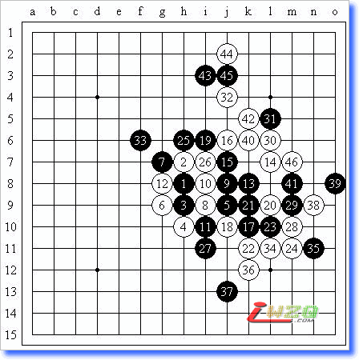
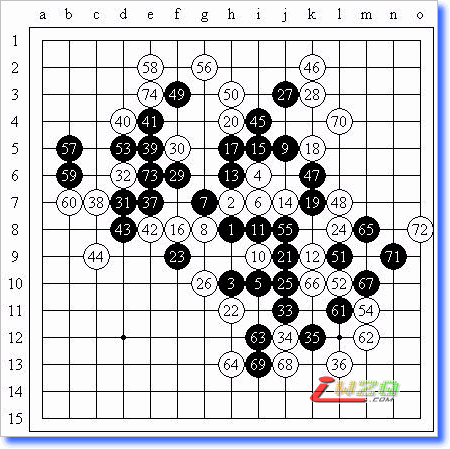

嘛，好久没写棋评了，一方面是因为最近没怎么参加比赛，另一方面，每天上QQGame下五盘棋，质量实在不敢恭维，虽然只是保持状态的行为，但觉得也是有些浪费时间。昨天和小鸟交流了一下，觉得这样不是个办法，后来就变成了每天下两盘棋，尽量去仔细想……后来发现还是这样更好一点，节省了时间同时还有收获。

这一局我执黑。6、7的应对我已经走过很多次，比以前有了很大的自信，8是常见的强防，8-18应该是另一选择，8-12则是力图还原的想法，但黑棋还有9-f8的一手决定权。实战的应对9是自然的强手，实战的10和10-11都是强防，10-12败，黑如何胜？留给大家思考，基本进攻性状把握好的前提下不要给白棋反先的机会。实战的12后是黑必胜的局面，但17选择错误（正解就是五子棋习题（37），答案过些日子给出）！18唯一防，19以下只好选择交换，24？可惜25后还是发现黑棋无法取胜。30选择对攻！32后黑棋本有机会暂时稳定局势（33-40，35-42），可惜实战中求胜心切，忽略了上下联系的进攻手段，44争先妙手！

这一局我执白。13、14的最新变化大家也都很熟悉了，前一阵子也研究过15-51，16-g4，17-k8的变化，后来证明还是黑棋不好走。实战15的变化是明智的选择，16据说是上下皆可，但我对上止的变化并不熟悉，记得有一次是执黑被秒杀，实战中我选择了下止的变化，实际上对我来说还是有些陌生的局面。19是必然的防守，计算认为20后黑棋没有VCT，事实上也的确如此。22是防止黑棋向下发展，同时让4-2-8的斜眠三产生更大威胁，有机会完成23、24的交换使局面均衡。26的想法是给左边一点势力，让右边留点余味。针对27的进攻，28是早就计算好的防守，29是很好的拓展！30防守后31又是不给白棋留机会的进攻，32则是“防在双杀点”的概念性防守，以下33、35的交换是否有必要，但只要52位被黑棋占据，下方还不至于一下子崩溃。42是考虑后的手段，认为从长远来看左下方应该是最后的取胜机会，但黑棋从45起忽然发起猛烈的进攻！49做杀！50唯一防！51？52的关键点当然是直接占据。53又是富有欺骗性的一手，54率先拓展后56必然！否则黑棋有VCF。以下局部很容易算清，因而57、59的手段有些稍微不合适，特别是60后黑棋的49-41-53斜眠三失去了效力，使白棋在局部的优势扩大了。61再回右下方交换，但由于51的失误，局部的失先已经不可避免。70直接占据关键点！读秒期间黑棋交换了两手后认输了。局部而言白棋并没有做杀，黑棋也有很多防点，但由于借不到其他先手，复盘时发现白棋局部已经必胜了。同意，每天下两盘五子棋。省时省力，效率高。
现在还继续每天10盘棋，对自己的脑力活动很有帮助
今天下了盘差不多的啊